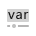

交互预览 · 依据已有 VM 截图与当前主界面组合制作，示例数据和未核对图标仅用于展示；保留当前产品 Logo，其他图标后续按 VM 原件资源迁移。不代表 WPF 已重构或功能已接入。
SunEyeVision
文件
设置
工具
系统
帮助

运行模式（占位）
☷
⚒
var
流程1 ▷ ◷
流程2
＋
⌄
流程1
▱ 1
图像源1
● 画布缩放: 100%
流程 尚未运行 │ 模块 — ms │ 100%
图像
模块结果
图像源1 · 图像 ▾
▥ ▦ ⊕ ⊖ 1:1 ⛶
图像结果区域 · 运行后显示
结果名称
当前值
变量管理
⌄ 图像源1
模块状态
—
♧
耗时（ms）
—
♧
⌄ 图像
♧
图像宽度
—
♧
图像高度
—
♧
⌄ 灰度图像
♧
图像源 (0/0)
自动切换
▣
运行全部 ◢
⊕
▣
▤
⌄
▷
历史结果
帮助
执行序号
时间
模块数据
● 暂无日志（示意）
日志列表待接入
采集
工具列表按实际目录接入；本预览暂不模拟。